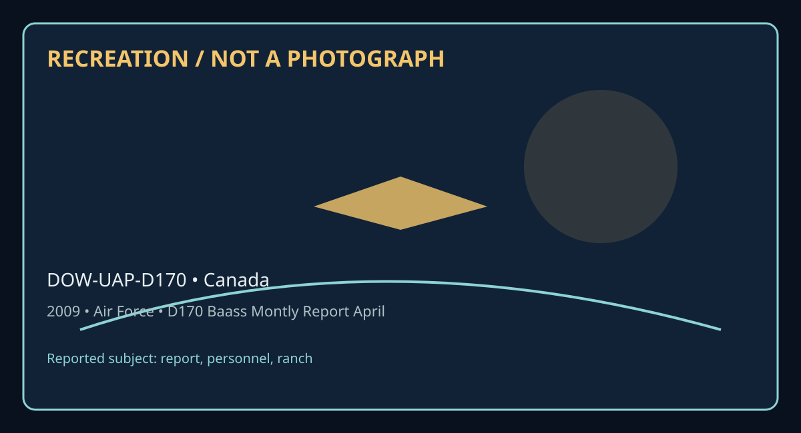

Release 07 / archival case file / DOW-UAP-D170
D170 Baass Montly Report April 2009
This d170 baass montly report april places a report, personnel, ranch thread in a 2009 Canada record.
ID: DOW-UAP-D170
Filename:
DOW-UAP-D170-BAASS_Montly_Report_April_2009.pdfDate marker: 2009
Location: Canada
Agency or collection signal: Air Force
Pages read: 50

RECREATION / NOT A PHOTOGRAPH. The diagram is an interpretive editorial aid, not source imagery.
What this document says
The opening page's extracted text begins: “IIIIIIW11111,1111 11,1111111,11111,,1111 ® pril 2009 ly Report”
Across the 50 pages, the recurring terms are report, personnel, ranch. Those details belong to this file, not to a generic case template. Page-level reading follows:
- Page 1: IIIIIIW11111,1111 11,1111111,11111,,1111 ® pril 2009 ly Report
- Page 2: April 2009 Report Bigelow Aerospace Advanced Space Studies (BAASS) This iofocmatioo is proprietary aod confidential and cannot be di55eminated or used without prior written consent from the Operating Manager of BAASS".
- Page 3: PREFACE This Progress report summarizes BAASS activities and progress for the period April 1-April 30, 2009. TABLE OF CONTENTS Topics covered in this report are the following: Progress on Recruiting Staff .................................................................................Page 2 Progress on Obtaining Clearances for Existing Staff ...............
- Page 4: Progress on Staff Recruitment • Between April 1-30, 2009 in response to job advertisements in multiple on line locations, BAASS received a total of 281 resumes. • The first level of screening (removal of applications on the basis of too frequent job changes, those obviously inexperienced to work at BAASS, non-US citizens etc) was conducted on all resumes. •
- Page 5: BAASS Employees AAP Person 4 Administrator MP Person 7 Deputy Administrator Fulltime BAASS Employees Significant Part-time BAASS Employees AAP Person 8 Senior Analyst level V AAP Person 98 Principal Engineer AAP Person 9 Lead Program Manager AAP Person 52 Senior Engineer level Ill AAP Person 10 Lead Program ManaR:er AAP Person 53 Executive Assistant RTB AAP
- Page 6: We are optimistic that in the next 2-3 months we can hire the first year's full complement of staff (approximately 50-60 personnel to begin the 2 nd year) that will make BAASS the most maximally productive organization in this field. However, this will give BAASS a base that will only partially cover the investigative and analytical needs within the United S
- Page 7: Progress on Obtaining Clearance for Existing Staff MP Person 4 . . MP Person 7 the BAASS administrator, BAASS deputy L----....... _....-er_s..,.on~a::----, MP p 53 BAASSsenior analyst, erson executive ......,..,,,.....----,,__.........______ ~P Person secretar to MP Person .4 BAASS Senior Program Manager Security, MP Person 9 BAASS lead program manager MP Pe
- Page 8: · Progress by Earthtech on Production of 24-30 Position Papers on Physics of Advanced Aerospace Vehicles On December 31, 2008 BAASS awarded a contract to Earthtech International IAAP Person 57 Ito deliver 24-30 position papers that will be based on expanding and focusing on strategically important sub-projects from the 12 position papers previously delivered
- Page 9: --- Contributor Organization Topic Due Date !AAP Person 58 EarthTech lntern'I Antigravity Studies 5/1/20C!:J ~P Pe_~~on jMP pe~sQn 75 .___ ___,!consulting SC-mediated gravity experimentation 5/1/20C!:J IAAP Person 69 Posltronlcs Research Matter-antimatter energy source 5/15/20C!:J ~p Per_~on jAAP Person 7_4 .___..,!Cons. Warp drives 5/15/20C!:J -I IAAP Perso
- Page 10: IAAP Person 78 IAAP Person 80 IAAP Person 81 IAAP Person 79 IAAP Person 64 AAP Person 75 l IAAP Person 77 AAP Person 76 I AAP Person 72 I AAP Person 75 . . 1 Univ.of Texas/Austin Intern'! Acad. Astronautics Wayne State Univ. DoD consultant Northrop Grumman (ret.) jGravWave, LLC jUnlv. of Washington University of Nevada Reno I •p consultlng l L Metamaterials/
- Page 11: BAASS has Contracted to Purchase Information on UAPs from MUFON In order for BAASS to best serve the government it needs to become the central information source on UAPs in the United States and around the world. It is essential to receive information on current UAPs that are occurring in real time in the United States until BAASS has sufficient staff (possi
- Page 12: The following two documents comprise MUFON activity summaries for March and April 2009. Note: BAASS currently has concerns about the current level of productivity from MU FON, especially what appears to be a significant decrease in cases during the month of April. MUFON SIP Report for February- March 2009 April 16, 2009 Executive Summary MUFON's efforts for
- Page 13: Detailed Report for February-March, 2009 After finalizing the MUFON-BAASS project contract on February 20, 2009, MUFON initiated efforts to put in place the necessary logistical and personnel resources in support of the project: Project Kickoff On February 24, 2009 an email was sent to all MUFON State and Assistant State Directors announcing the SIP project.
- Page 14: • · ··· MUFON created an account for each project hire on Shiftboard.com and each hire was added to the appropriate Shiftboard team. Project recruitment is ongoing. IAAP Person 59 lwas hired on as the SIP Project Coordination Manager with an effective hire date of March 9, 2009.IAAP Person 101 lwas hired on as the SIP Project Operations Manager with an effec
- Page 15: 2. SHIFTBOARD.COM - to verify shift duty and to find out who the upcoming DO is. 3. SKYPE.COM - all outgoing and incoming phone calls between the witnesses and DOs or between the DOs and MUFON project personnel is handled through a SKYPE phone number. This number "rings" on the computer of the DO who is currently on shift thereby acting as a virtual phone nu
- Page 16: are not available then MUFON will deploy regional investigators or nationwide investigators. Recruited field investigators that did not have a current version of the MUFON Field Investigator manual 5.0 were sent a copy. MUFON has assembled a rapid deployment kit consisting of Group 2 and 3 equipment (as outlined in the Field Investigator manual) that would b
- Page 17: MUFON SIP Report for April, 2009 May 6, 2009 Executive Summary MUFON Dispatch began operations on April 1st with 16 hours a day, 7 days a week coverage from 6AM PST to 10PM PST with no lapse in coverage for the entire month. MU FON Dispatchers did an outstanding job vetting all incoming CMS cases. Of the 319 United States CMS cases in April, nine of them wer
- Page 18: job at front ending all incoming reports. We experienced some issues with the Skype Call-In number, but those issues have been worked out and MUFON will now begin forwarding incoming telephone reports to MUFON's 1-800 hotline to MUFON Dispatch. In addition MUFON Dispatch Operators will start inputting MUFON historical archives in CMS. Field Investigation MUF
- Page 19: LOCATION: Pasadena, MD Date of event: April 16, 2009 TIME of EVENT: 3:15 AM EST ( ) Exact ( x) Approximate Case 16421 CAT 2 Deployment A.AP Person 109 Investigator I--,.,.-.,,..--:..,,.--:---:__,,-.,,.,-_-_....____________________ ..... . I1843(a)(3) GPS Coordinates: ...._______________________. COORDINATES ACCURACY: Location of witness vehicle on highway wh
- Page 20: MUFON to accomplish the same goal as paying for Internet search engine advertising. We are waiting for a response fro~AAP Person 123 Iwho is considering the offer. In addition MUFON was authorized by BAASS to participate in any TV media appearances that would increase MUFON's public visibility, but cannot sign on for any appearance until MUFON's contract wit
- Page 21: IMP Person 59 INVESTIGATOR REPORT: 04/07/09 ********* case #16421 1 : 0 m I visited the witness********* and her 17 year old son,*****. We met at 1843(a)EL ... place of employment in Pittsburg KS, which is a day care service for the elderly ca e 1843(a)(2) After brief introductions, I asked ****and her son to describe what they saw. They drew sketches descri
- Page 22: as big as a small house, hovering 200 feet over the tree tops, and only about 4 to 5 blocks away. ****was afraid that her missing son may be aboard the craft because he wasn't answering his phone. They decided to drive home and retrieve *****'s phone to see if the younger son would answer a call from his older brother. When ***** came out ofthe house, he not
- Page 23: Scammon. He didn't hear or see anything either night. I received the following info from him: ► No nearby military bases ► An army ammo plant is located in Parsons 10-15 miles away. ► HM Plant formally Slurry, is in the area. During 9/11 , there were military soldiers and police surrounding its perimeter guarding it. There was 11 million lbs of high grade ex
- Page 24: with the name of the person who set off Chinese Lanterns or the name of the person reporting this action. I have also made several attempts to call the *******s and!1843(a)(2) I !1 843(a)(2 lbut have had no answer. I don't believe that the *****s saw Chinese Lanterns. What they saw they described as being as large as a small house. They viewed this from 4 to
- Page 25: Date of Event: April 20, 2009, 05.20 local time. On April 25, 2009 a STAR team CAT 2 Deployment was activated on this case. STAR team lnvestigatorlAAP Person 103 lwas assigned as lead investigator. AAP Person 59 utual UFO Network) STAR Team Coordinator/ Manager IAAP Person 59 I WITNESS NARRITIVE: (Witness: ***** "*****" *****) i left my house in ala arkansas
- Page 26: As vehicle was directly over her car, there was a Bright flash of light that illuminated road surrounding her vehicle and lit up inside of car, the ran car off the road twice. Event Blew out her cell phone - battery dead (was fully charged before incident) would not hold charge after for a long time. She tried to call for help with out success Witness experi
- Page 27: was lower than that. The body of the craft was black, dark. There were 3 lights on each side of two sides on the bottom of the craft. She couldn't see anything on the back side but there is no doubt in her mind that the craft was triangular. When she held her hand out in front of her, the size of the object was larger than a baseball. The craft appeared to b
- Page 28: there was a medicine man years ago in Chickalah (pronounced chick key la)- which is not far away. 1843(a) ******* talked with *******'s father (2) He said that they have quite a few deer every day in the pasture. Once or twice a week they will all of a sudden bolt for cover in the trees and then will quickly return to where they were and continue grazing. Th
- Page 29: ~: P:.~~.?~I - ldid look at the cell phone and it appears that the cell phone was functional however the battery's internal fuse was blown. This is not a common occurrence and is usually the result of a high voltage insult. Although ******* was very friendly, she said it would be better to talk more in the morning. We will return there with***** and******* t
- Page 30: · though the energy company claims that can't happen. *******'s e-mail address is pa43(a)(2) 1 Neighbors also report strange things. One of the neighbors reported (to *******) seeing a big black panther - even though there aren't supposed to be any panthers in this area. *******'s brother dropped in by chance while we were there even though ******* hadn't to
- Page 31: Date of event: April 16, 2009 03.15 local time On April 20, 2009 a STAR team CAT 2 Deployment was activated on this case. STAR team lnvestigatorf.APPerson 108 lwas assigned as lead investigator. IAAP Person 59 I MUFON (Mutual UFO Network) ,w...L..i;;J,L,lt..J..l,ol.WIJ,I..M.w.w.l.l,l,,LL. l.lilLlolia.,/ Manager AAP Person 59 Witness 1843(a)(2) Date of report
- Page 32: 1843(a)(2) 1843(a)(~L 1843(a)(~) SOURCES THAT WERE CONTACTED: •BWI (In process) •Email 4/18: ********County Department of Public Works, northern districtl1843(a)(2) ps43(a){2) ICitizens Info. Center [Street Sweepers]: .. Q!Jestion: ..'.'.Wer:er:=-larea streets cleansed/swept on the night or early morning around 03:00am onApru 16th?" Reply from DPW 4/20: "We
- Page 33: CONCLUSION: ***** was perplexed and a bit shaken by this incident and wondered if this was an US military aircraft, why would they built such a thing! He also stated that most of the home occupants who reside on his street are either with the military, law enforcement agencies or working as government contractors. I found ***** ***** to be very credible, log
- Page 34: BAASS Progress on Northern Tier Sightings INITIAL ANALVSIS Project Northern Tier In an effort to organize the information and enhance the progress of the BAASS investigation of the Northern Tier (NT) events the following initial analysis was prepared. This will be a living document and subject to change throughout the process of the project. Initial Analysis
- Page 35: mention what would appear to be reliable sources. Additionally, a second run of the time frame of interest, this time including other military installations with nuclear weapons capability as well as non-military nuclear facilities such as power production (Attachment 1) Malmstrom Air Force Base. Great Falls. Montana The first geographic area addressed was t
- Page 36: plotted. Additionally, events documented outside of the area recognized as USAF Missile facilities were not plotted. In 1976, Wolverton documented additional 108 events. The same criterion was applied to these incidents as was used in plotting the 1975 incidents. Attachment 3 is a map of the 1976 events. The Events in the Malmstrom area continued into 1977.
- Page 37: unidentified as it traveled along the perimeter. The unidentified then purportedly traveled on to the north approaching the Strategic Air Command (SAC) Alert facility and the area of the Weapons Storage Area (WSA). Through the reporting it was not clear the amount of time this covered or how long the unidentified loitered in the area of the either the Alert
- Page 38: difference was the lack of aerial sighting of the UAP. During the timing of the events numerous ground personnel reported direct observation; however, despite numerous attempts an Air National Guard helicopter crew was unable to observe the object from the air. The fact the ANG was tasked with an airborne mission based on the events at LAFB is significant; a
- Page 39: ATTACHMENT 1 37 11'11s information Is proprietary and confidential and cannot be disse,11i11ated o, used without prior w, itten co,,se,,t fro, 11 the Ope, ating Manager of BA.ASS".
- Page 40: ATTACHMENT 2 38 Ihis Information Is proprietary and co11fide11tial a11d ca,mot be disse,11il'lated or used .....ithout f)rior writteA coAseAt from the Of)eratiAg MaRager of BAASSt>.
- Page 41: ATTACHMENT 3 39 Tllis i11fo1111atio11 is p,opr ietar y oild corrfideiltial 81,d c81111ot be dissemil'lsted or used wi thout prior written co11se11t from the Operating Manager of BAASS.,.
- Page 42: ATTACHMENT 4 40 This info, 111atio11 is propr ietar y a11d co11fide11tial and ca1111ot be disse11 ri11ated or· used witl,out plior writte11 consent from the Operating Manager of BAASS@),
- Page 43: ATTACHMENT 5 41 Thi! information is proprietary and confidential and cannot be disse111inated or usea 'Nithout prior written consent from the Operating Manager of BAASS"".
- Page 44: ATTACHMENT 6 42 Tliis i11fo, 11 ,atio11 is p, op, ieta, y a11d co11fide11tial a11d ca1111ot be disse11 ,i11ated or used without p1 io, w, itte,, co1,se,1t f,o,,, tl,e Operating Manager of BAASS~.
- Page 45: Investigative Plan Project Northern Tier {NT) Investigative Plan: This Investigative Plan is intended to focus the efforts of the BAASS personnel involved in NT. It will be broken into geographic areas to simplify the gathering of information as it pertains to that area and events. This is not intended to be a final and static document, but a living and evol
- Page 46: Malmstrom Air Force Base Interview 1843(a)(2) re arding his extensive knowledge of the 1843 2 geographic area. Duet (a)( ) extensive knowledge, and his location locally {Las Vegas), he should be one of the first steps. This will help to refine investigative efforts. Compile a complete list of witnesses/potential witnesses for the MAFB events Refine this list
- Page 47: General Consider FOIA requests to AFOSI regarding: Any IIR reporting responsive to CR# HQ CR 44, Para 30 and HQ CR 45 Para 38 for the period Aug - Nov 1975 Specifically those originated by Detachments at {NT Bases) Identify and locate other nuclear facilities in the NT AOR (those operated by USA, USN, DOE, etc.) Continue mapping of all events in the NT AOR d
- Page 48: BAASS Continues Study on Information on UAPs released by the British, Canadian, French and Danish Governments • Over the past eighteen months, The Ministry of Defense (MoD) in the United Kingdom has released approximately 7297 pages of files pertaining to the performance of alleged UAPs in British air space. More recently the British MoD released a second gr
- Page 49: • Throughout 2005-2008, GEIPAN, a department of CNES (French civilian space agency), released about 100,000 pages comprising the investigative reports from approximately 1650 cases, including 6000 eyewitness interviews involving UAPs, the majority of which have been investigated by the Gendarmerie. BAASS translators/analysts are currently sorting and codifyi
- Page 50: Conclusion Significant progress has been made in training and initially deploying BAASS field investigative teams during the month of April. Further, BAASS has begun to acquire significant information on UAP activity in Brazil. The BAASS MUFON relationship is maturing, but the case numbers are still considerably lower than expected. The reasons for this drop
Historical context and disclosure schema
Read in context, this record belongs to the 2009 information environment: Air Force paperwork, a Canada setting, and the reporting conventions visible in the source. Its broader disclosure value is procedural as well as anecdotal: it shows how an observation, material question, investigation, or analytical program was routed, described, and preserved. That makes it comparable to other Release 07 records without collapsing unlike evidence into one event.
Evidence limits
The source establishes that this document exists and records what its authors or quoted witnesses wrote. It does not, by itself, prove the identity, performance, origin, or physical reality of the reported subject. Extraction preserves wording but cannot restore missing attachments, authenticate provenance, or independently validate testimony. Interpretations beyond the page-specific record remain hypotheses.
Source: supplied PDF in research/tranche-07. This article is a research aid, not a claim that the reported object was non-human.